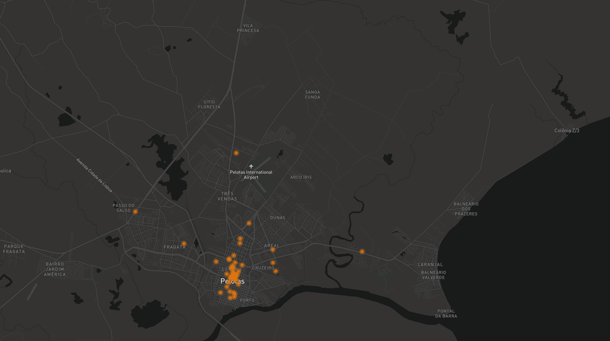

Motivation & Methodology

On some nights (And by "some" I mean "more than my bank account would like" ) I usually order food
with those Delivery apps. It's very comfortable and all I see is the 30-40 minutes between the Order button
and the delivery at my door.
Despite all the logistics to make the order arrive at my door, what if I decided to
GO OUT for dinner?
Would my cuisine choice affect which part of the city I should go to?
There would be districts in the city that group
types of cuisine? That's what I intend to answer here.
Existiriam distritos na cidade que agrupam
tipos de gastronomia? É isso que pretendo responder aqui.
Grouping data from recommendation apps, I investigated the location of restaurants to understand their distributions geographically. The results will be seen below.
First, a little spoiler
The vast majority of the restaurants are located in the city center of Pelotas.
In all scenarios, this neighborhood was the one with the most results. Personally, this result was already expected because in Pelotas, the city center also concentrates a large portion of the commercial, service, financial and cultural activity.
Upfront, we can already conclude that the city center is the most diverse place for gastronomy, so, in cases of doubt, this would be a good place to make choices. Keeping that in mind, let's see which neighborhoods also excel in different types of cuisine.
Pizzas
If Pizza is your go-to dish, in Pelotas, there is an interesting number of neighborhoods that can be visited. 8 neighborhoods are listed, with Downtown, "Três Vendas" and "Areal" having the most restaurants. Of the 50 restaurants returned, Downtown corresponds to 66% of the options, Três Vendas to 10% and Areal to 6%. Without the Center, Três Vendas and Areal would have 29% and 17% of the restaurants respectively.
The chart above (and all of them on this page) are clickable. Try clicking on the caption "Downtown" so that this portion of the chart disappears and the analysis made above with other neighborhoods can be seen. The filters used to search those places were "Pizza Place" and "Italian food".
Asian Food

"Asian food" is a very broad term, but my intention here was to look for dishes like "Sushi", "Yakissoba" and typical soups. For this, I filtered restaurants by "Asian", Chinese", "Japanese" and "Sushi".
In this case, only 3 neighborhoods emerged, namely "Downtown", "Areal" and "Laranjal". Of the 9 restaurants, the overwhelming majority are located in the Center, with 78% of the restaurants, followed by Areal and Laranjal, with identical amounts (11% each).
Steak houses

Your author is a vegetarian, but he understands that steakhouses exist and that people look for them. In Pelotas, many neighborhoods have a steak house, with 10 neighborhoods returned in the survey. After Downtown, Laranjal, Porto and Areal have the largest number of establishments of this type:
Downtown took 55% of the restaurants of this type, followed by Laranjal (10%), Porto (6%) and Areal (6%). The filters used were "Barbecue" and "Steakhouse".
Baurus

Pelotas is very famous for its Baurus (a local powered up sandwich). Never tell someone from Pelotas that the bauru of your city is better, because in addition to being a lie, they will be offended. Around here, Downtown, Areal and Porto gather most of the Baurus Places (called "Lancherias"), with almost 90% of the Lancherias located in these neighborhoods.
Among the available filters to search for restaurants, the picked up ones here were "American", "Burger", "Hot Dog" and "Diner".
Candy Shop
Pelotas is nationally known as "The Sweet City". There is an annual festival, "Fenadoce", which celebrates the sweets and candy culture of the city. For olaces who sell those, 5 neighborhoods are more representative, and for the first time, Downtown did not concentrate more than half of the establishments of this type, but it comes close, with 43% of the results:
The only filter used for this was "Dessert".
Cafés
This category is not usually suited for "dinner", but there are cafés in Delivery apps and I was curious regarding their locations. In fact, Pelotas has a lot of them, with 50 establishments returned in 8 different neighborhoods. However, the city center has 78% of the examples, and the remaining 22% are divided between 'Porto', 'Três Vendas', 'Areal', 'Padre Reus', 'São Gonçalo', the '5th District' and 'Laranjal'.
The filter used here was "Cafe".
Bars
The city's nightlife seems vibrant, or at least has a structure for it. We have 72 bars, the highest number of results in all categories, divided into 10 different neighborhoods in the city. As expected, the Center concentrates just over half of the options, with 52% of the results, followed by 'Fragata', 'Três Vendas' and 'Areal'.
Filters used were "Bar", "Brew Pub", "Pub" e "Wine Bar".